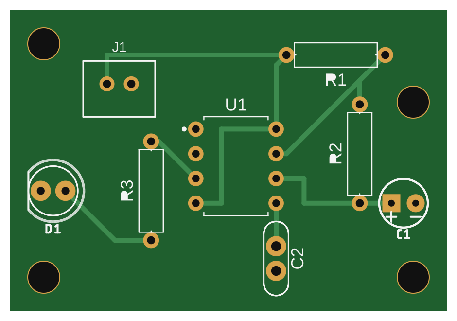
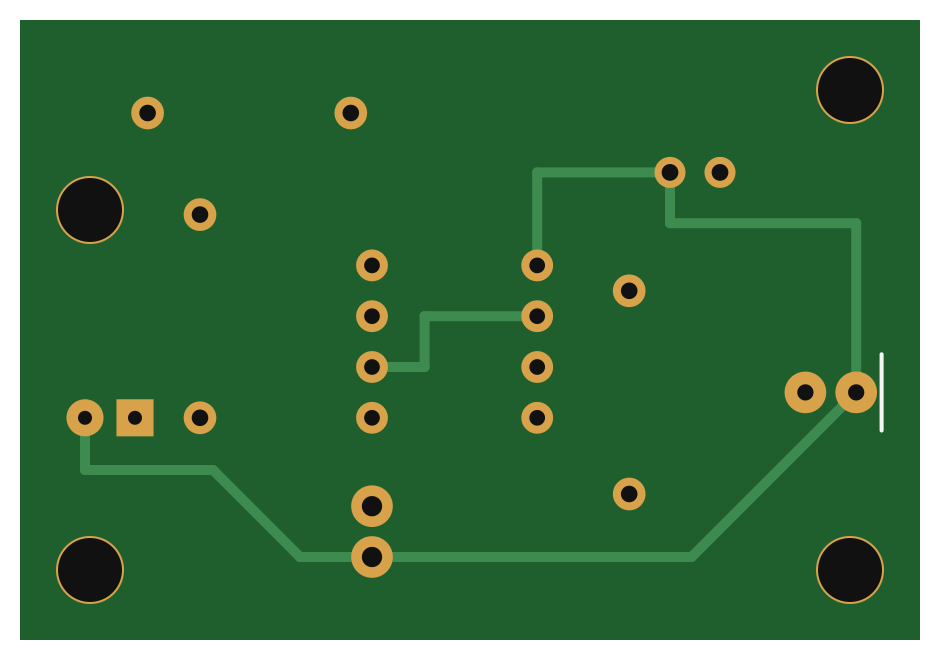
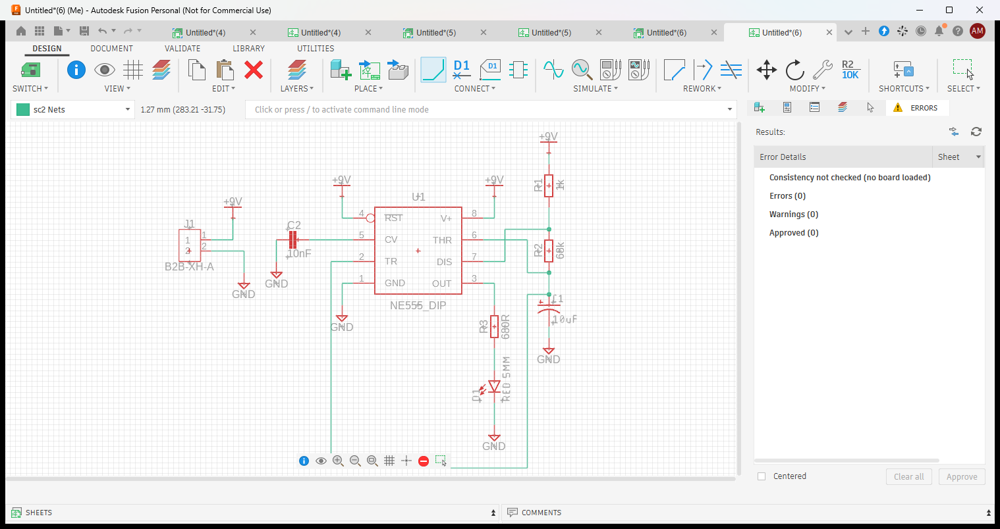
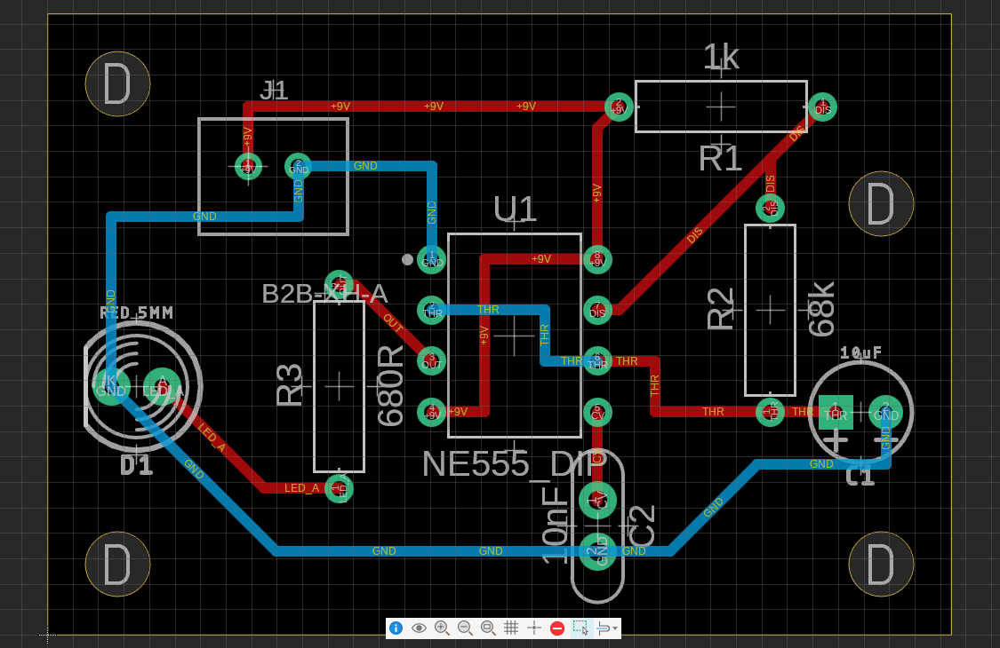

The first board with a chip. A 555 timer blinks a red LED about once a second, from a 9 V battery. Board 10 walked the road once with nets of two pins; this board's nets join three, four and five pins, it has a chip with eight pins, a part with a plus and a minus (the 10 uF capacitor), and a schematic that uses power symbols. Not from a Babook lesson (the 3D course is on Babook, https://babook.co.il/courses/fusion360/).
Each layer catches what the others cannot (how they work).
1. Fusion's ERC
1 open
the schematic's electrical rules. Run 2026-11-18, Fusion 2706.1.17: POWER pin U1 V+ connected to +9V
2. Fusion's board check
clean
airwires, overlaps, Fusion's rules. Run 2026-11-18, Fusion 2706.1.17
3. Our board check
0 errors · 8 warnings
netlist, schematic = board, routing, the fab's limits. 0 approved, with reasons (below).
4. The simulated factory
0 errors · 13 warnings
the Gerbers and drill file, read as the fab does; the e-test. 0 approved, with reasons (below).
The circuit and the board
+9VGNDDISTHRCVOUTLED_A
Schematic, drawn from fusion/board.sch. Net names on the wires; a red cross marks a pin left free on purpose.Board, top view, drawn from fusion/board.brd; bottom copper shows through, faded. Copper is coloured by net.
What the factory receives
Drawn from the Gerber and drill files alone, as the fab's viewer draws them: copper under the mask, mask openings (gold), silkscreen, holes.

top

bottom, seen from below
In Fusion

schematic, screenshot from Fusion

board, screenshot from Fusion
The netlist, traced from intent to copper
Each net, followed through every stage. The intent is checks.json, written by hand from the agreed circuit, so a wire to the wrong pin shows up here.
how every check works, and what each finding means
Status, step by step
Step
Done
Parts found in Fusion's libraries (NE555 Active with a 3D model, the electrolytic with marked + and -)
2026-11-18, Fusion 2706.1.17
Schematic from the chat: 8 parts, 9 power symbols, 7 nets; the netlist read back equal to the intent on the first run; looked at (media/schematic.png): one crossing (pin 6 over pin 7's wire, no dot), every other join a dot
2026-11-18
Electrical rules check (ERC)
ran 2026-11-18: one finding, "POWER pin U1 V+ connected to +9V" (the 555's supply pin is named V+, its net +9V); to be approved in Fusion with that reason: not yet
Board, first try: 50 x 40 mm, routed on both layers
2026-11-18: 0 unrouted, no copper off the two layers; Fusion's board check 0 errors; looked at (media/board.png)
Placement reviewed and moved by the owner in Fusion, agreed; routed again (route.py); board shrunk to 45 x 31 mm with the fourth hole beside R2
2026-11-18, again on the 45 x 31 board: 0 errors; the netlist equals the intent in checks.json; 8 silkscreen warnings (thin lines in the Tinkercad resistor and NE555 footprints, marks near pads), not yet approved
GND copper pour
not yet
Saved to the Fusion cloud, Gerbers and drill file, factory_check.py
2026-11-18, after a clean rebuild (circuit, board, route) in a new design, once the owner had freed editable documents: saved, 10 factory files, factory_check.py 0 errors, the bare-board e-test equal to the schematic (7 nets, no opens, no shorts); 13 warnings (4 screw holes plated, silkscreen of the library footprints, no LCSC numbers) wait for the owner's approval